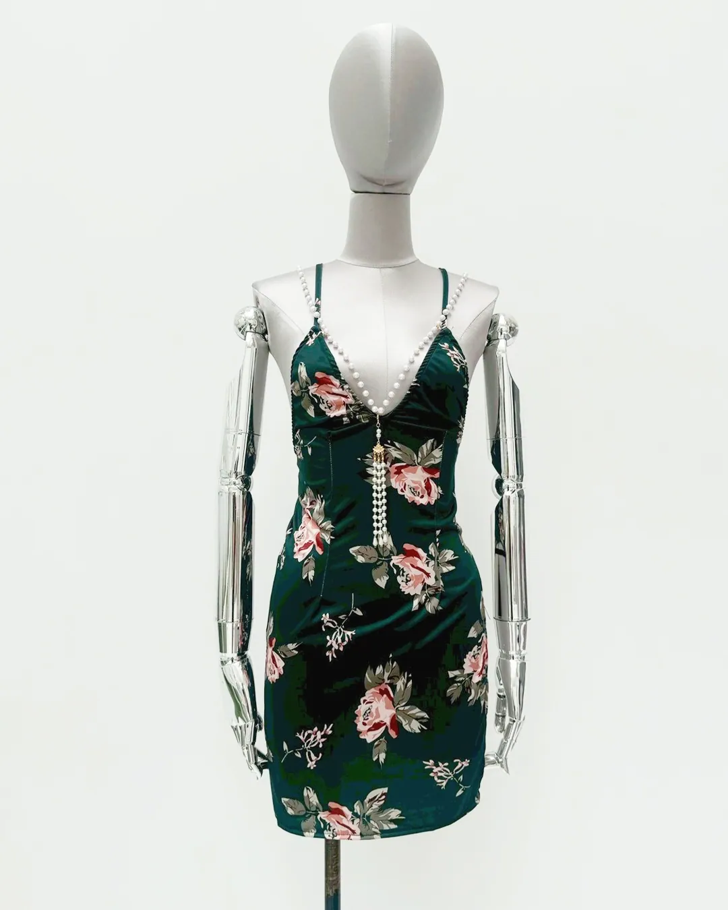

Local Multimodal Workflow
ComfyUI × RTX 5090 · On-Prem
落地 02 · Banana（視覺專家）· 生圖
Banana 落地：單品照進去，實穿圖 出來
INPUT · 純單品照reference

OUTPUT · 地端生成實穿RTX 5090

風格是約束來的
先觀察品牌官網模特兒風格，把人設、妝髮、鏡頭語言寫進 prompt ── 生成的是「這個品牌的人」。
難衣服 = 低重繪
蕾絲、馬甲這類容易跑偏的結構，改用低重繪幅度保留原衣服，只換模特兒氣質與畫面質感。
整批可複製
同一條 workflow 換商品圖就能重跑，一晚可出整個商品線的實穿圖。
Local Multimodal Workflow · ComfyUI × RTX 5090CH 03 · DEMO A